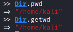
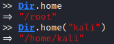
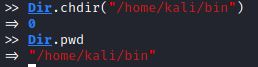
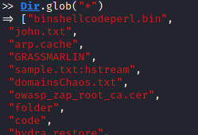

Dir
Methods
Here https://www.geeksforgeeks.org/ruby-dir-class-and-its-methods/
• current working directory.

• home directory

• change directory

• Listing
◇ Folders in a directory
>> Dir.chdir('/destination_directory')
>> Dir.glob('*').select {|f| File.directory? f}
>> Dir.glob('*').select {|f| File.directory? f}

◇ Diretories and Files
>> Dir.glob("*")
